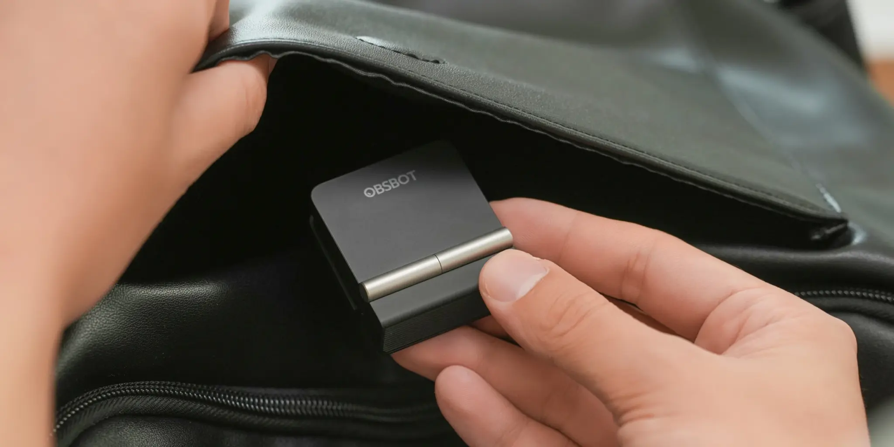
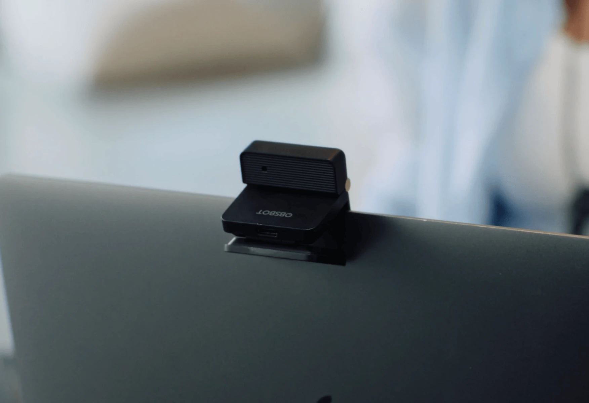
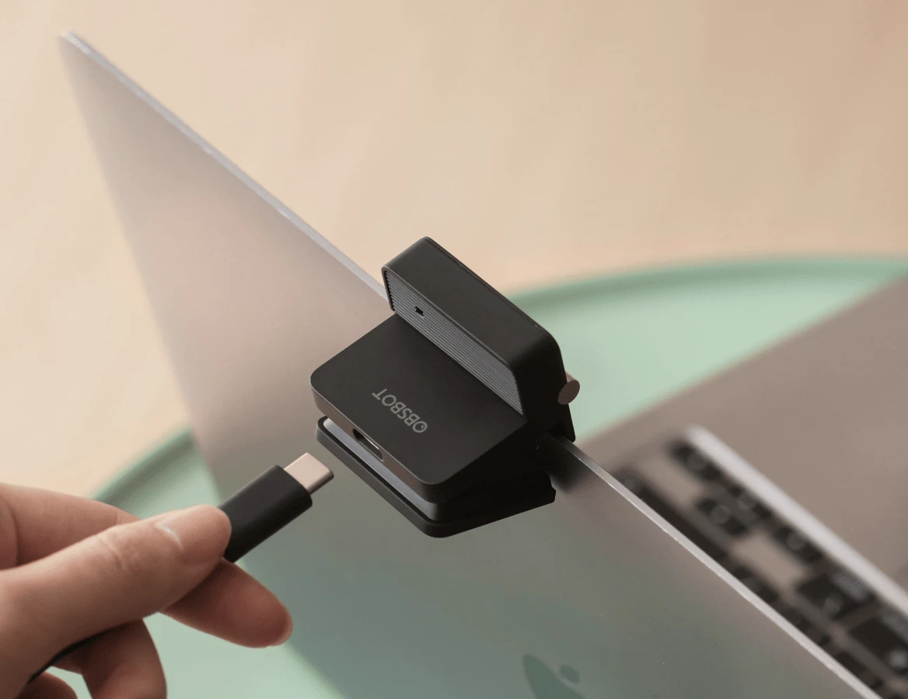

제품 소개
Obsbot이 프라이버시 보호를 위해 일반적인 플라스틱 셔터 대신 폴딩 메커니즘을 채택한 119달러 상당의 컴팩트 4K 웹캠, Meet Flip을 출시했습니다. 지난달 중국에서 처음 공개된 이 카메라는 현재 Obsot 공식 홈페이지, Amazon 및 주요 소매점을 통해 전 세계적으로 판매되고 있습니다.
디자인 및 물리적 특징
Meet Flip은 독특한 폴딩 메커니즘을 탑재했습니다. 소프트웨어 기반의 음소거 버튼이나 슬라이딩 방식의 플라스틱 셔터 대신, 카메라 렌즈를 하단부로 접어 내리는 방식을 채택했습니다. 이 물리적 동작을 통해 렌즈를 가림과 동시에 기기를 자동으로 절전 모드로 전환합니다.
기기를 펼치면 즉시 활성화되며, 무게는 37.7g으로 매우 가볍습니다. 본체에는 노트북 화면이나 외부 모니터에 고정할 수 있는 일체형 클립이 포함되어 있으며, 하단에는 삼각대 장착을 위한 표준 1/4인치 나사산이 마련되어 있습니다.
카메라 사양 및 성능
Meet Flip은 고성능 이미지 센서와 정교한 광학 설정을 바탕으로 뛰어난 화질을 제공합니다.
- 센서: 1/2인치 CMOS 센서
- 조리개: f/1.8
- 해상도 및 프레임: 4K @ 30fps 또는 1080p @ 60fps 지원
이 제품은 위상차 자동 초점(PDAF) 기능을 탑재하여 일반적인 웹캠에서 흔히 발생하는 초점 탐색 현상 없이 피사체를 빠르게 포착합니다. 또한, 밝은 창문 앞과 같은 까다로운 조명 환경에서도 균호한 노출을 제공하는 HDR 기술이 적용되었습니다.
오디오 및 소프트웨어 기능
오디오 측면에서는 지향성 마이크와 무지향성 마이크가 결합된 듀얼 마이크 시스템을 갖추고 있습니다. 사용 환경에 따라 네 가지 오디오 모드를 선택할 수 있습니다.
- 지향성(Directional): 목소리 분리 강조
- 이중 지향성(Dual-directional): 두 명의 대화 상황에 최적화
- 무지향성(Omnidirectional): 그룹 회의 환경용
- Raw 스테레오: 후반 작업 편집용
또한 Obsot Center 앱을 통해 다양한 소프트웨어 기능을 제공합니다. 사용자를 화면 중앙에 유지하는 자동 프레이밍 기능과 줌 또는 트래킹을 위한 제스처 컨트롤이 포함됩니다. 특히 Zoom, Teams, Google Meet 등에서 회의 내용 요약 및 전사를 지원하는 AI Magic Notes 기능을 제공하며, 이 서비스는 초기 120분 무료 제공 후 구독형으로 운영됩니다.
연결성 및 호환성
Meet Flip은 USB-C를 통해 연결되며 Elgato Stream Deck과 통합이 가능하며, OSC 및 API 프로토콜을 지원합니다. 또한 Obsot은 이 제품이 Nintendo Switch 2와 플러그 앤 플레이 방식으로 호환되어 게임 플레이 녹화 및 스트리밍에 활용될 수 있다고 밝혔습니다.
총평
Meet Flip은 물리적인 폴딩 구조를 통해 프라이버시 보호와 편의성을 동시에 확보한 실용적인 4K 웹캠입니다. 고성능 PDAF와 HDR 지원으로 안정적인 영상 품질을 제공하며, 다양한 오디오 모드 및 AI 기반 소프트웨어 기능을 결합하여 전문적인 스트리밍과 비즈니스 화상 회의 환경 모두에 적합한 성능을 보여줍니다.
产品介绍
Obsot 推出了售价为 119 美元的紧凑型 4K 网络摄像头 Meet Flip。为了保护隐私，该产品采用了折叠机构而非普通的塑料遮盖片。这款摄像头上月首次在中国亮相，目前已通过 Obsot 官方网站、Amazon 及主要零售商在全球范围内销售。
设计与物理特性
Meet Flip 配备了独特的折叠机制。它摒弃了基于软件的静音按钮或滑动式塑料遮盖，而是采用将镜头向下折叠至底部的设计。这种物理动作在遮挡镜头的同时，会自动将设备切换到待机模式。
当设备展开时会立即激活，其重量仅为 37.7g，非常轻便。机身包含一个可固定在笔记本电脑屏幕或外接显示器上的一体式夹具，底部还设有用于安装三脚架的标准 1/4 英寸螺纹。
摄像头规格与性能
Meet Flip 基于高性能图像传感器和精细的光学设置，提供卓越的画质。
- 传感器：1/2 英寸 CMOS 传感器
- 光圈：f/1.8
- 分辨率及帧率：支持 4K @ 30fps 或 1080p @ 60fps
该产品搭载了相位对焦（PDAF）功能，能够快速捕捉目标，避免了普通网络摄像头中常见的对焦搜索现象。此外，还采用了 HDR 技术，确保在明亮窗户等复杂光照环境下提供均衡的曝光。
音频与软件功能
在音频方面，该设备配备了结合定向麦克风和全向麦克风的双麦克风系统。用户可根据使用环境从四种音频模式中进行选择：
- 定向（Directional）：强调声音分离
- 双向（Dual-directional）：优化两人对话场景
- 全向（Omnidirectionl）：适用于小组会议环境
- 原始立体声（Raw Stereo）：用于后期制作编辑
此外，通过 Obsot Center 应用可提供多种软件功能。其中包括让用户始终保持在画面中心的自动构图功能，以及用于缩放或追踪的手势控制。特别是针对 Zoom、Teams 和 Google Meet 等平台，它还提供支持会议内容摘要和转录的 AI Magic Notes 功能（该服务在最初 120 分钟免费后按订阅模式运行）。
连接性与兼容性
Meet Flip 通过 USB-C 连接，可与 Elgato Stream Deck 集成，并支持 OSC 和 API 协议。此外，Obsot 表示该产品支持 Plug & Play（即插即用）方式兼容 Nintendo Switch 2，可用于游戏录制和直播。
综合评价
Meet Flip 是一款通过物理折叠结构兼顾隐私保护与便利性的实用型 4K 网络摄像头。凭借高性能的 PDAF 和 HDR 支持提供稳定的视频质量，并结合多样化的音频模式及基于 AI 的软件功能，使其非常适合专业直播和商务视频会议环境。
总结
Meet Flip 是一款具备物理折叠结构的 4K 网络摄像头，旨在通过硬件设计提供更强的隐私保护。它集成了高性能传感器、双麦克风系统以及 AI 驱动的软件功能，能够同时满足专业内容创作者和商务用户的需求。
製品紹介
Obsotは、プライバシー保護のために一般的なプラスチック製シャッターの代わりに折りたたみ機構を採用した、約119ドルのコンパクトな4Kウェブカメラ「Meet Flip」を発表しました。先月中国で初公開されたこのカメラは、現在Obsot公式サイト、Amazon、および主要な小売店を通じて世界中で販売されています。
デザインと物理的特徴
Meet Flipは独自の折りたたみ機構を搭載しています。ソフトウェアによるミュートボタンやスライド式のプラスチックシャッターの代わりに、カメラレンズを下部へ折りたたむ方式を採用しました。この物理的な動作により、レンズを覆うと同時にデバイスを自動的にスリープモードに切り替えます。
デバイスを開くと即座に起動し、重量は37.7gと非常に軽量です。本体にはノートPCの画面や外部モニターに固定できる一体型クリップが含まれており、下部には三脚取り付け用の標準的な1/4インチネジが備わっています。
カメラ仕様と性能
Meet Flipは高性能なイメージセンサーと精密な光学設定に基づき、優れた画質を提供します。
- センサー：1/2インチ CMOSセンサー
- 絞り値：f/1.8
- 解像度およびフレームレート：4K @ 30fps または 1080p @ 60fps をサポート
この製品は位相差オートフォーカス（PDAF）機能を搭載しており、一般的なウェブカメラで頻繁に見られるフォーカスハンティング現象なしに被写体を素早く捉えます。また、明るい窓の近くなど、難しい照明環境でも均一な露出を提供するHDR技術も採用されています。
オーディオとソフトウェア機能
オーディオ面では、指向性マイクと無指向性マイクを組み合わせたデュアルマイクシステムを備えています。使用環境に応じて4つのオーディオモードを選択可能です。
- 指向性（Directional）：声を分離して強調
- 二重指向性（Dual-directional）：2人の会話シーンに最適化
- 無指向性（Omnidirectional）：グループ会議環境用
- Rawステレオ：後処理編集用
また、Obsot Centerアプリを通じて様々なソフトウェア機能を提供します。ユーザーを画面中央に保つオートフレーミング機能や、ズームやトラッキングのためのジェスチャーコントロールが含まれます。特にZoom、Teams、Google Meetなどで会議内容の要約や文字起こしをサポートするAI Magic Notes機能を搭載しており、このサービスは初期120分間無料提供ののちサブスクリプション形式で提供されます。
接続性と互換性
Meet FlipはUSB-Cを介して接続され、Elgato Stream Deckとの統合が可能で、OSCおよびAPIプロトコルをサポートしています。また、Obsotは本製品がNintendo Switch 2とプラグアンドプレイで互換性があり、ゲームプレイの録画やストリーミングに活用できることを明らかにしました。
総評
Meet Flipは物理的な折りたたみ構造を通じてプライバシー保護と利便性を両立させた実用的な4Kウェブカメラです。高性能なPDAFとHDRサポートにより安定した映像品質を提供し、多彩なオーディオモードやAIベースのソフトウェア機能を組み合わせることで、プロフェッショナルなストリーミングからビジネス会議まで幅広い環境に適応する性能を備えています。
まとめ
Meet Flipは物理的な折りたたみ機構でプライバシー保護と利便性を両立した4Kウェブカメラです。高性能なPDAFやHDR、多彩なオーディオモードに加え、AIによる要約機能などを備えており、ストリーミングからビジネス用途まで幅広く対応します。
Product Introduction
Obsot has launched the Meet Flip, a $119 compact 4K webcam that replaces traditional plastic shutters with a unique folding mechanism for enhanced privacy. First unveiled in China last month, the camera is now available globally through the official Obsot website, Amazon, and major retailers.
Design and Physical Features
The Meet Flip features a distinctive folding mechanism. Rather than relying on software-based mute buttons or sliding plastic shutters, users can physically fold the lens downward. This action hides the lens while simultaneously putting the device into sleep mode. When unfolded, the camera activates immediately.
The device is exceptionally lightweight at 37.7g and includes an integrated clip for mounting onto laptop screens or external monitors. Additionally, it features a standard 1/4-inch thread on the bottom for tripod mounting.
Camera Specifications and Performance
The Meet Flip delivers high-quality imagery based on a high-performance image sensor and sophisticated optical settings.
- Sensor: 1/2-inch CMOS sensor
- Aperture: f/1.8
- Resolution and Frame Rate: Supports 4K @ 30fps or 1080p @ 60fps
The device is equipped with Phase Detection Auto Focus (PDAF), allowing it to capture subjects quickly without the "focus hunting" issues common in standard webcams. It also incorporates HDR technology to provide consistent exposure even in challenging lighting environments, such as when positioned in front of bright windows.
Audio and Software Features
On the audio front, the device features a dual-microphone system combining directional and omnidirectional microphones. Users can choose from four distinct audio modes depending on their environment:
- Directional: Emphasizes voice isolation
- Dual-directional: Optimized for situations where two people are speaking
- Omnidirectional: Designed for group meeting environments
- Raw Stereo: For post-production editing
The Obsot Center app provides various software features, including auto-framing to keep the user centered in the frame and gesture controls for zooming or tracking. Notably, it includes an "AI Magic Notes" feature that supports summary and transcription for meetings on Zoom, Teams, and Google Meet; this service offers 120 minutes of free use before moving to a subscription model.
Connectivity and Compatibility
The Meet Flip connects via USB-C and can be integrated with Elgato Stream Deck. It also supports OSC and API protocols. Furthermore, Obsot stated that the device is "plug and play" compatible with the Nintendo Switch 2, making it suitable for game recording and streaming.
Overall Review
The Meet Flip is a practical 4K webcam that successfully combines privacy protection with convenience through its physical folding structure. By combining high-performance PDAF and HDR support with diverse audio modes and AI-driven software features, it delivers professional performance suitable for both content streaming and business video conferencing.
SummaryThe Meet Flip is a compact 4K webcam featuring a unique physical folding mechanism that provides privacy while automatically managing power states. It offers high-end specifications including a 1/2-inch sensor, PDAF, and HDR, alongside advanced audio modes and AI-powered software tools. Its broad compatibility makes it a versatile choice for both professional business meetings and content creation.


